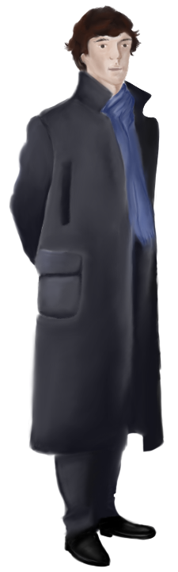

Danger signs have one function: to keep curious people away. But in remote places like this? They are best used by those who have something to hide...

I saw it, John. A gigantic hound! I've always been able to trust my senses, the evidence of my own eyes, until now. I can't believe that i saw some kind of monster but i DID see it. So the question is HOW? We need to go back to Baskerville to test a theory!
